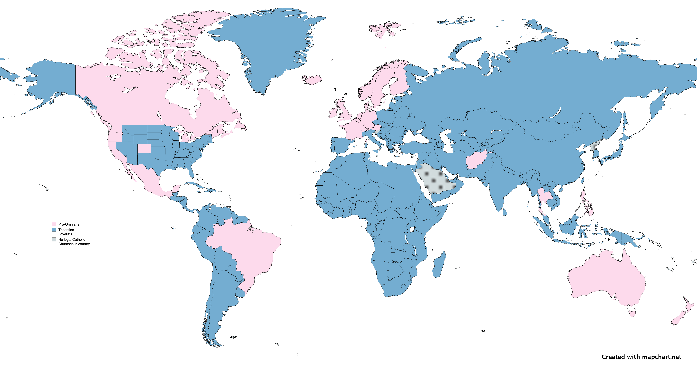

Thoughts on Conclave
Table of Contents
1. Spoiler Warning
If you don't like spoilers, then go watch the movie first and then come back to this.
2. Review of Edward Berger's Conclave
In Edward Berger's Conclave, we get an M. Night Shyamalan-style twist at the end of what might’ve been a boring, but mostly realistic portrayal of the process of electing the next pope. The twist inserts contemporary gender politics in a clever way that would seem realistic if you didn’t know much about church history.
I like giving credit where it’s due and I’ll say, as a literary matter, the way Cardinal Benitéz uses Cardinal Lawrence’s words from his homily on the first day of the Conclave is very well done.
I know what it’s like to live between two certainties.
It was a beautiful literary ending that I really appreciated.
That said, Lawrence's homily said that certainty was a sin. Now, if you assume that is true, then the literary arc of the movie from this homily to the final reveal is perfect. The problem is, it's false. The Catholic Church does not teach that certainty is a sin.
The big reveal is that Benitéz discovers they are not actually a male but has XX chromosomes and a uterus, yet looks male, and never knew about their true sex since they lived a celibate life as a priest or missionary. After learning this, Benitéz goes to the pope and offers a resignation, but the pope rejects the resignation and makes Benitéz a cardinal anyway.
The movie is fiction, but I think it's worthwhile focusing more on history here, and then trying answer some of the questions the movie raised:
- Could the Pope select a non-male cardinal?
- Would the Pope select a non-male cardinal?
- How would the Pope select a non-male cardinal, if he wanted to?
- What would likely happen if the Pope broke ~2000 years of tradition and selected a non-male cardinal?
- Remember, the thing that makes the Catholic Church special is unity. Schism is to be avoided, unlike Protestant churches which were all born in an act of schism.
2.1. Chekov's Gun Moment
The "Chekov’s Gun" moment in the movie is early when all the cardinals are about to eat, and the new Cardinal Vincent Benitéz is introduced by Cardinal Lawrence (Ralph Fiennes) as being made a cardinal "in pectore", (Latin for "in the heart") meaning the late pope did it without anyone else knowing.
2.2. Historical Use of In Pectore
This practice of making cardinals in pectore goes back to 1423, when Pope Martin V named two cardinals secretly and then revealed their names seven years later in 1430. This practice started shortly after the Western Schism, where in 1378-1417, there were multiple claimants to the papacy. Martin was elected at the Council of Constance in 1417, and that ended the schism. During this time, the church’s authority was significantly weakened.
One of the reasons for the schism was because the papacy had moved to Avignon, France* in 1309. The reason was because Rome had gotten so violent that the papacy was not safe. But once Rome’s security situation settled down, both the papal claimants, the one in Rome and the one in Avignon, both vied for power.
- Footnote: France is known as the "eldest daughter of the church" because the Frankish King, Clovis I, converted to Catholicism in 496 AD. This was a time when the Western Roman empire had collapsed and the Frankish kingdom was rising in power. The Frankish kings protected the Vatican after the collapse of the Roman Empire.
Back to Pope Martin V, why did he name cardinals secretly? In the early 1400s, the Catholic Church was in a very weakened state. The Pope of the recently reunified church had an interest in avoiding stirring up regional and factional rivalries after the schism. The whole point of in pectore was to reduce the risk of schism.
Pope Martin named Domingo Ram y Lanaja, a Spaniard from Aragón, who came from a region where the Antipope Benedict XIII still had supporters until his death in 1423. Announcing his elevation to the college of cardinals immediately would have risked alienating other factions. This was to prevent another schism.
Since then, all the examples of cardinals being elevated in pectore had to do with protecting them from the dangers of war or communist revolutions, and to avoid the risk of another schism. So the application in the movie, to hide the true sex of a cardinal who intends to resign and seeks guidance from the pope, seems unlikely.
3. Could the Pope select a non-male cardinal?
The movie does implicitly make use of the the doctrine of Papal Supremacy, which says that the Pope has "full, supreme, and universal power over the whole Church, a power which he can always exercise unhindered."
CCC 882: The Pope, Bishop of Rome and Peter’s successor, "is the perpetual and visible source and foundation of the unity both of the bishops and of the whole company of the faithful."402 "For the Roman Pontiff, by reason of his office as Vicar of Christ, and as pastor of the entire Church has full, supreme, and universal power over the whole Church, a power which he can always exercise unhindered."403
So a pope, upon hearing Benitéz’s confession, has the authority to change the rules for being a cardinal. Would it be likely for a pope to do this?
4. Would a Pope select a non-male cardinal?
Given the importance of the Catholic Church being the "one, holy, Catholic, and apostolic church", the risk of schism cannot be understated. Since America is historically a Protestant nation, this risk of schism is not taken very seriously, since all Protestant denominations can trace their origins back to some particular schism. Catholics don't have this experience. There's one church.
Choosing a cardinal in pectore who wasn't male would only delay the possible schism. Something the movie didn't address. Given that the pope is responsible for avoiding schism, what's the more likely way that such an outcome would be achieved? Stated differently, if we assume the pope wanted to reject a clergymember's resignation because they discovered they weren't male, how would a pope solve this problem?
5. How would a Pope select a non-male cardinal, assuming he wanted to do that? And what would follow?
Such a big change to the eligibility rules for the rank of cardinals would require more than just a secret exception being made for one person. Likely it would involve a public change in Canon Law through a Motu Proprio (Latin for "on his own initiative"), which is a papal document issued directly by the pope, without requiring approval from other Church bodies. This is kind of like an Executive Order issued by the President.
The Motu Proprio would need to amend Canon 351 §1:
Can. 351 §1. The Roman Pontiff freely selects men to be promoted as cardinals, who have been ordained at least into the order of the presbyterate and are especially outstanding in doctrine, morals, piety, and prudence in action; those who are not yet bishops must receive episcopal consecration. https://www.vatican.va/archive/cod-iuris-canonici/eng/documents/cic_lib2-cann330-367_en.html
In Latin:
Can. 351 — § 1. Qui Cardinales promoveantur, libere a Romano Pontifice seliguntur viri, saltem in ordine presbyteratus constituti, doctrina, moribus, pietate necnon rerum agendarum prudentia egregie praestantes; qui nondum sunt Episcopi, consecrationem episcopalem recipere debent. https://www.vatican.va/archive/cod-iuris-canonici/latin/documents/cic_liberII_la.html
I highlighted the same "selects men" part because in the Latin version of Canon Law, there are two different words for "men": there’s homines and viri. Homines is like "mankind" or "human". Viri means adult human males.
So the pope would need to make this change to Canon Law to allow for a non-male cardinal, who would be one step away from the papacy itself. This change would have turned the movie from an M. Night Shyamalan thriller into a total snoozer, but that’s the Vatican for you.
5.1. Post-Motu Proprio Scenario
Now, suppose the pope issues this Motu Proprio, then what?
Let’s set the scene: A private chamber in the Vatican, shortly after the issuance of the Motu Proprio, Omnes Homines, which amends Canon Law 351 §1, changing "viri" (men) to "homines" (humans), allowing non-male cardinals. The air is thick with tension as Cardinal Tedesco confronts the Pope and Vincent Benitéz.
5.2. Dialogue Post-Publication of Omnes Homines
- Cardinal Tedesco: "Your Holiness, this Omnes Homines is a betrayal of the Church’s sacred order! Scripture is clear—‘I do not permit a woman to teach or to exercise authority over a man; she must remain quiet’ (1 Timothy 2:12). You’ve declared a heresy, elevating Vincent Benitéz despite this revelation of their nature. The college of cardinals cannot stand for it!"
- Pope: "Cardinal Tedesco, I do not take this step lightly. The Church is not a museum of rigid customs, but a living body guided by the Spirit. Our Lord Himself said, ‘The Spirit blows where it wills’ (John 3:8), and we see its work in Vincent Benitéz. For decades, Vincent served in the jungles of the Amazon, baptizing thousands, building churches with their own hands, risking death to bring the Gospel to the forgotten. Is this not the fruit of a true shepherd? Tradition honors such service—think of St. Paul, who called Phoebe a ‘deacon of the church’ (Romans 16:1), or St. Catherine of Siena, whose counsel shaped popes."
- Cardinal Tedesco: "Phoebe carried letters, not authority! And Catherine was no priest! This is different—this is a cardinal, one step from Peter’s chair! You twist scripture to fit this… this aberration!"
- Vincent Benitéz: "Cardinal Tedesco, I did not seek this. When I learned my body was not as I believed, I offered my resignation. But if I may—Galatians 3:28 says, ‘There is neither Jew nor Greek, slave nor free, male nor female, for you are all one in Christ Jesus.’ I’ve lived my life for Christ, not for my flesh. In the missions, I taught men and women alike, and they saw Christ in me. Should that end because of a truth I never knew?"
- Cardinal Tedesco: "That’s spiritual unity, not a license to govern! The Church has stood for two thousand years on the rock of male priesthood. You’d have us crumble it for your sake?"
- Pope: "Enough. The rock is Peter, and I am his successor. Canon Law bends to the keys of the kingdom (Matthew 16:19), and I wield them to bind and loose. Vincent’s work mirrors the apostles—risking all for the flock. When I named them cardinal, it was for their deeds, not their form. Omnes Homines does not discard tradition; it fulfills it. The Didache, our earliest teaching, speaks of prophets chosen by their fruits, not their sex. Vincent’s fruits are undeniable. Will you deny the Spirit’s harvest?"
- Cardinal Tedesco: "This will split the Church, Your Holiness. Bishops will rise against you. The faithful will see weakness, not strength."
- Pope: "Then let them rise. The Church has weathered schisms before—Avignon, Constance—and emerged whole. I fear God’s judgment more than man’s. Vincent Benitéz will serve, not as a symbol, but as a shepherd proven in fire. The matter is closed."
- Vincent Benitéz: "Your Holiness, I only pray I am worthy of this cross."
- Cardinal Tedesco: "You’ll see the cost of this, both of you. The faithful will not forget." (Tedesco storms out, leaving a heavy silence.)
(Reminder: this is an exercise in fiction, responding to fictional movie. Any mistakes or blasphemies you find will be swiftly corrected, send them to mail@tobilehman.com)
5.3. The Omnian Schism
5.3.1. Catholic Church Faces Historic Schism Following Papal Election Deadlock
A news update after the delays in selecting the new pope start to heat up:
In the wake of the pope’s death and the controversial release of Omnes Homines, the College of Cardinals has failed to elect a new pontiff after a brief conclave, plunging the Catholic Church into unprecedented turmoil. Secular media outlets have seized on the deadlock, with headlines proclaiming a deepening crisis within the Church.
The situation escalated dramatically as the College of Cardinals fractured into two rival factions, each naming its own pope. One group has declared Cardinal Benitéz as the rightful successor, while the other has proclaimed Cardinal Tedesco as the new leader of the faithful. The split has reverberated across the globe, with archbishops in various regions pledging allegiance to their preferred claimant.
Support has coalesced along stark geographic and ideological lines. African nations have overwhelmingly backed Cardinal Tedesco, while most of North America has aligned with Cardinal Benitéz—though pockets of Tridentine traditionalists in the United States remain defiant. In regions where Cardinal Benitéz is celebrated as a local hero, including Afghanistan, Mexico, and Brazil, dioceses have rallied behind him.

The Catholic Church now stands divided, facing its most significant schism in centuries. Further updates will follow as this historic crisis unfolds.
5.4. Why didn't the Anglican Church schism after it allowed female priests in the 1970s?
This has to do with where the Anglosphere is at, politically. The philosophy of liberalism was developed by the English people in the 18th century. It spread to the new world through the United States. What makes the Catholic Church different is that it's global, and includes 1.4 billion people. By comparison, there are close to 0.1 billion Anglicans. The risk of schism is much more acute in a global church that has a claim to be the One, holy, Catholic and apostolic church. There can be only one!
6. Conclusion
The movie appears to be a minimal solution to the hypothetical "What if there was a non-male pope?" and then works backwards from there, finding a minimally workable solution. It doesn't engage deeply with scripture or church history and frequently portrays all the Cardinals as self-serving, ambitious men who project their own personal ideologies on the church. The only one portrayed as pure in heart is Benitéz. Even the protagonist, Lawrence, is only praised for his "steady hand", and the moment of redemption for him is at the very end, when his face appears to show that he has accepted this new non-male pope. The movie never tries to explore what would likely happen if a non-male pope was elected and then people found out. Those kind of longer-term consequences, the knock-on effects, are something a lifetime monarch like a pope has the responsibility of thinking about and factoring into decisions.
There were some other clues in the movie that there wasn’t much research done for it, like how they mentioned in passing that Adeyemi might be "the first African pope," when there was Pope Victor I, who was Bishop of Rome from 189 AD to 199 AD (he was from Roman North Africa).
The Anglican and Episcopalian churches both changed the rules to allow for female priests aroun the 1970s, during Second-wave feminism. The Anglican Church was formed in 1534 when King Henry VIII wanted to change the rules around divorce and annullment. The American Episcopal Church was formed in 1789 after the revolution, it was Anglican but after the war of independence with England, well, decisions had to be made.
Both churches are liturgically similar to the Catholic Church but they are severed from papal authority and the full history of the church. As a result, they have become subservient to domestic politics in their respective countries. The political project of empowering women in society was good, in my opinion. The issue here is the role of the church, and the timeless truths she embodies. Saying that women should have equal rights to men does not imply that women should become pope.
The Catholic Church was never fully subservient to Roman Imperial politics. It transformed Rome from the inside. It started out being a small sect that was frequently attacked by the Romans. Then three centuries later, Emperor Constantine converted to Christianity and later emperors made the whole Empire Christian. The Pope himself was above the Emperor on issues of morality. Like on Christmas Day in 390 AD, the Bishop of Milan refused communion to Emperor Theodosius as punishment for his Massacre at Thessalonica, where he killed 7000 people. Bishop Ambrose made the emperor do an 8-month penance before being readmitted to communion.
After the collapse of the Roman Empire, the Catholic Church became the unifying center of what we now call "Europe". It was known as Christendom to the european people between 500 AD and 1500 AD. The Protestant revolts of the last 500 years have produced a fragmented landscape of churches that have been separated from their origins. This movie doesn't do justice to the original church and what makes her special.
7. Appendix
7.1. The Catholic Herald, Conclave revisited: what might actually make a man unfit to be pope?
This article takes a different angle, instead of talking about whether the pope could/would/should choose a non-male cardinal, it focuses on another conversation in the history of the church at the Council of Trent that deals with "bodily perfection" and it's possible interaction with the ability to administer the sacraments.
7.2. Christina M. Sorrentino, writes on her substack, Why As Catholics We Should Not Support the Movie 'Conclave'
One major issue is the movie’s misrepresentation of the papal election process. It presents a narrative that undermines the sanctity and solemnity of the papal conclave. By dramatizing internal conflicts and depicting the Church as politically motivated, the film misleads audiences about the true spirit that guides the election of a new Pope by the College of Cardinals, which is the Holy Ghost. A movie that distorts the truth in this way can create scandal for both Catholics and non-Catholics alike. The Church is not simply an institution but a vessel of truth that holds the entirety of Divine Revelation.
There's an epistemological problem with trying to portay the insular Papal Conclave process. Only the Cardinals and the Swiss Guard are allowed into the space where this election happens, so the ignorance of everyone outside makes it easy to fill in the details with your own narrative. Therefore, moviemakers can give the false impression that you have come to understand more about what a papal election is like.
"It does seem odd that the church sticks so forcefully to its tradition of male celebrants," said "Conclave" star Ralph Fiennes. "I think the Church of England has proven that (having) women as priests is very effective."
My take on the Mr. Fiennes' quote here is that it is predictably English, as discussed in our exploration of Anglicanism and philosophical liberalism above. I also grew up in a related culture and can empathize with this sentiment, but the Catholic Church should be understood on her own terms.